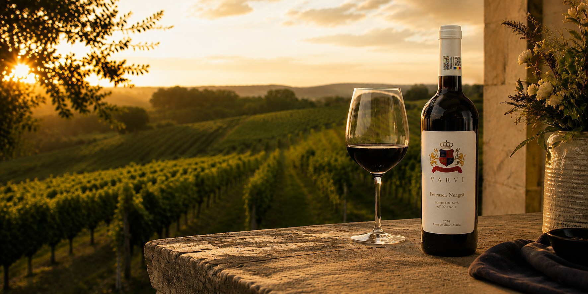
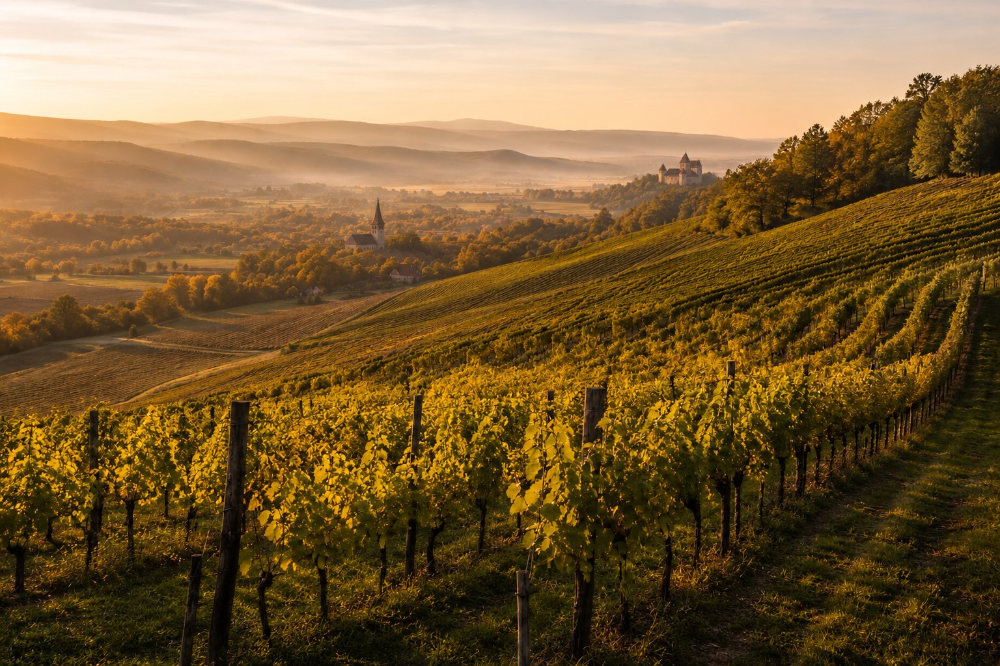
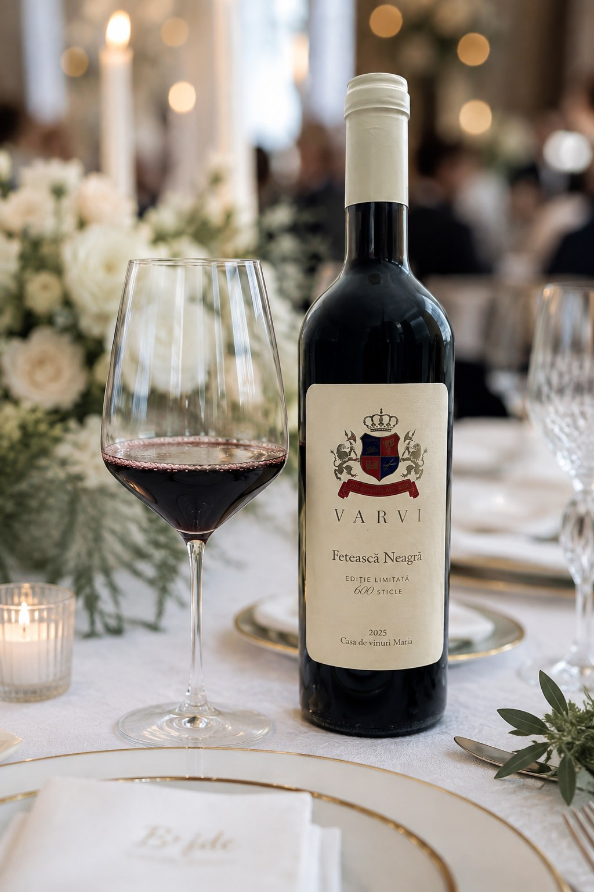

Cricău · Alba · România

Casa
Vinul nu începe în sticlă. Începe cu un loc.
Vinurile VARVI se fac la Cricău, în Alba, în inima ținutului viticol istoric al Transilvaniei, de către Casa de vinuri Maria.
- România
- Transilvania
- Alba
- Cricău
Colecția
Colecția VARVI
Șase expresii. Un singur loc.

Ediție limitată
Fetească Neagră
Nu se face cu milionul. Fetească Neagră se îmbuteliază în ediții limitate, numărate în sute de sticle, nu în sute de mii.

Recunoaștere
Premiat pentru ce este în sticlă.
Comenzi
Comandă vin VARVI
Vinurile VARVI se comandă direct de la casa de vinuri, telefonic. Vă ajutăm să alegeți vinurile, confirmăm disponibilitatea și aranjăm personal comanda.
+40 745 612 366 Preferați emailul? Scrieți-ne.Direct de la VARVI. Aranjat personal.
AUT VINCERE AUT MORI
Blazonul VARVI